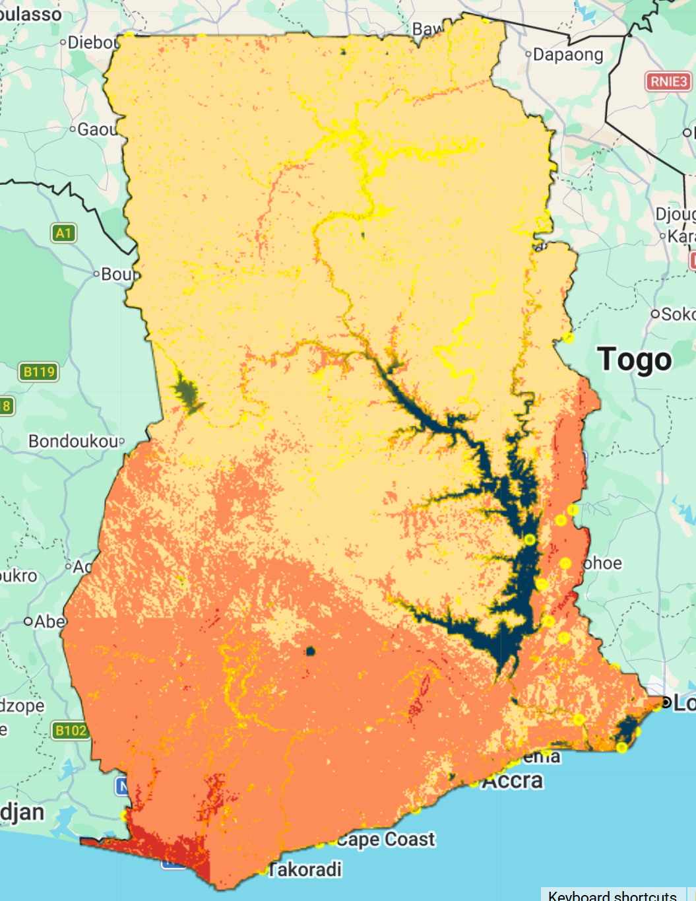

Agricultural Warehouse Siting in Ghana
View JavaScript source Read the workflow

Project overview
Project: Agricultural Warehouse Siting — Ghana (National)
Method: Multi-Criteria Analysis (MCA), Analytic Hierarchy Process (AHP)
and Weighted Linear Combination (WLC)
Platform: Google Earth Engine (JavaScript)
Current script: Version 5 — 216 market locations
Project lead: Godwin Ebo Fosu, Ho Technical University
Status: Ongoing project
This project develops a national-scale geospatial decision-support workflow for identifying potentially suitable locations for agricultural storage warehouses across Ghana. The current implementation combines environmental, terrain, land-cover and accessibility criteria, applies a flood-risk exclusion mask, and compares alternative weighting scenarios.
The analysis includes 216 market locations and a set of known storage or market-related facilities currently used for an initial validation exercise. The validation points are concentrated in the Volta Region and should not be presented as a complete national validation sample.
Research objectives
- Prepare spatial suitability surfaces for the nine criteria used in the current model.
- Combine the standardised criteria using the base AHP weights and WLC.
- Apply the JRC Global Surface Water occurrence threshold as a hard exclusion mask.
- Compare the base suitability classification with three alternative weighting scenarios.
- Summarise the mapped area in each final suitability class and sample suitability values at the current validation locations.
- Export the principal raster outputs and validation table for further inspection.
Criteria and base weights
| Criterion | Dataset / source | Base weight |
|---|---|---|
| Land use / land cover | ESA WorldCover v200 | 0.25 |
| Slope | SRTM-derived terrain | 0.18 |
| Elevation (DEM) | SRTM GL1 30 m | 0.13 |
| Distance to roads | Uploaded Ghana roads asset | 0.13 |
| Distance to markets | Uploaded 216-market asset | 0.10 |
| Rainfall | CHIRPS Pentad | 0.09 |
| Temperature | ERA5-Land Monthly Aggregated | 0.06 |
| Relative humidity | ERA5-Land temperature and dewpoint | 0.04 |
| Aspect | SRTM-derived terrain | 0.02 |
| Total | 1.00 |
The current script assigns suitability scores from 1 to 4 for each criterion. The thresholds and scores are explicitly encoded in the JavaScript file and should be reviewed against the project's warehouse-siting rationale and supporting literature.
Workflow
- Study area: load the Ghana boundary asset and define the analysis geometry and nominal 1,000 m output scale.
- Environmental criteria: calculate long-term relative humidity, annual rainfall and mean air temperature surfaces.
- Terrain and land cover: derive suitability layers from ESA WorldCover, SRTM elevation, slope and aspect.
- Accessibility: rasterise the uploaded roads and 216 market locations and derive distance-based suitability surfaces.
- Flood exclusion: use JRC Global Surface Water occurrence greater than 20% as the exclusion condition.
- Weighted overlay: calculate the continuous WLC suitability index using the base weights.
- Classification: classify the index into four suitability levels and apply the flood mask as class 0.
- Sensitivity: run accessibility-, terrain- and climate-oriented alternative weight scenarios and identify areas classified as high suitability across all scenarios.
- Validation and statistics: sample the final class at the available facility points and calculate class-area summaries.
- Export: prepare GeoTIFF outputs and a CSV validation table in Google Drive.
Final map classes
| Value | Label | Display colour in script |
|---|---|---|
| 0 | Flood Excluded | Dark blue |
| 1 | Not Suitable | Red |
| 2 | Marginally Suitable | Orange |
| 3 | Moderately Suitable | Yellow |
| 4 | Highly Suitable | Green |
Export products
The script creates the following Google Drive tasks in the GEE_Exports
folder:
Ghana_Warehouse_Final_216Markets— final classified suitability raster.Ghana_Warehouse_SI_Continuous— continuous WLC suitability index.Ghana_Warehouse_Sensitivity_4Scenarios— base and three sensitivity classifications as a multiband raster.Ghana_Warehouse_ValidationResults— sampled validation locations and their final suitability class as CSV.
After the script runs, open the Tasks tab in the Earth Engine Code Editor and start the export tasks.
Important review notes before publication
This is an ongoing project. The following are technical checks to complete before interpreting the output as a validated national siting model.
- Distance rasters and scale:
fastDistanceTransform()returns distances in pixel units (after taking the square root). The current script multiplies those values by 1,000 or 2,000. Confirm the raster projection and pixel size used by the painted road and market images; otherwise the resulting distances and threshold classes may not represent metres accurately. - Road and market source quality: document the completeness, date,
positional accuracy and coverage of the uploaded
ghana_roadsand216_District_Marketsassets. Confirm that the market asset contains the expected 216 valid locations. - Date-window boundaries: Earth Engine
filterDate(start, end)uses an exclusive end date. Review the end dates used for the ERA5-Land and CHIRPS collections and annual rainfall windows to ensure the intended final day and full final year are included. - Rainfall aggregation: verify the CHIRPS pentad band units and temporal aggregation against the product documentation, and check that every annual image represents a complete year before taking the multi-year mean.
- Relative humidity: the script estimates relative humidity from temperature and dewpoint using a saturation-vapour-pressure relationship. Document whether this calculation is appropriate for the monthly aggregate inputs and whether the intended statistic is monthly RH averaged over time or RH derived from long-term mean temperatures.
- LULC suitability: justify the class-to-score mapping, especially the scores assigned to built-up, water, bare/snow/ice and other land-cover classes. Consider whether some classes should be excluded rather than assigned a low score.
- Terrain criteria: review the DEM, slope and aspect thresholds against engineering requirements for warehouse construction. Aspect may have limited relevance at the national scale and should be justified.
- Flood screening: JRC surface-water occurrence is a historical water-presence indicator, not a complete flood-hazard model. Consider adding floodplain, river proximity, drainage, rainfall extremes or authoritative flood-hazard information where available.
- Validation terminology: the current ten points are from the Volta Region pilot. The proportion falling in classes 3 or 4 is a descriptive suitability check, not conventional model accuracy unless an independent, representative reference dataset and a defensible validation design are established.
- AHP documentation: preserve the pairwise comparison matrix, consistency ratio and expert-judgement process used to derive the weights. The script checks that the weights sum to 1, but that check alone does not demonstrate AHP consistency.
- Sensitivity analysis: document how the three alternative scenarios were
chosen and report the weight totals and spatial agreement statistics.
The
allAgreelayer currently identifies pixels rated class 3 or 4 in all four scenarios; it is not a full continuous uncertainty analysis.
These are review points, not changes made to the supplied model. The script below is formatted for portfolio display and retains the model logic and asset references supplied for Version 5.
Google Earth Engine script
The complete script is available in the repository at
scripts/ghana_warehouse_siting_v5.js.
// ============================================================
// AGRICULTURAL WAREHOUSE SITING — GHANA (NATIONAL)
// Multi-Criteria Analysis (MCA) | AHP-Weighted Linear
// Combination (WLC) | Google Earth Engine
//
// VERSION 5 — WITH 216 ACTUAL MARKET LOCATIONS
//
// CRITERIA (9 total):
// Environmental : Relative Humidity, Rainfall, Temperature
// Terrain : LULC, Aspect, DEM, Slope
// Accessibility : Distance to Roads, Distance to Markets/Towns
// Hard Constraint: Flood Risk Mask (JRC)
//
// AHP WEIGHTS — BASE SCENARIO:
// LULC: 0.25 | Slope: 0.18 | DEM: 0.13 | Roads: 0.13 | Markets: 0.10
// Rainfall: 0.09 | Temp: 0.06 | RH: 0.04 | Aspect: 0.02
//
// MARKETS INCLUDED: 216 verified market locations across Ghana
// Author / Project Lead: Godwin Ebo Fosu — Ho Technical University
// ============================================================
// ============================================================
// 0. STUDY AREA
// ============================================================
var ghana = ee.FeatureCollection("projects/ee-kwabenafosu/assets/Ghana");
var ghanaGeom = ghana.geometry();
var resolution = 1000;
Map.centerObject(ghanaGeom, 7);
Map.addLayer(ghana, {color: '000000'}, 'Ghana Boundary', true, 0.6);
print('=== Warehouse Siting MCA v5 — Ghana (National) ===');
print('Study area loaded. 216 market locations included.');
print('Total markets in dataset:', 216);
var suitPalette = {min: 1, max: 4,
palette: ['#d73027', '#fc8d59', '#fee090', '#1a9641']};
// ============================================================
// 1. HELPER FUNCTIONS
// ============================================================
function clipToGhana(img) { return img.clip(ghanaGeom); }
// ============================================================
// 2. CRITERION 1 — RELATIVE HUMIDITY (ERA5-Land)
// ============================================================
var era5Monthly = ee.ImageCollection('ECMWF/ERA5_LAND/MONTHLY_AGGR')
.filterDate('2000-01-01', '2023-12-31')
.filterBounds(ghanaGeom);
var rhCollection = era5Monthly.map(function(img) {
var T = img.select('temperature_2m').subtract(273.15);
var Td = img.select('dewpoint_temperature_2m').subtract(273.15);
var num = Td.multiply(17.625).divide(Td.add(243.04)).exp();
var den = T.multiply(17.625).divide(T.add(243.04)).exp();
return num.divide(den).multiply(100).rename('rel_humidity');
});
var rhMean = rhCollection.mean().clip(ghanaGeom);
var rhSuit = ee.Image(1)
.where(rhMean.gte(40).and(rhMean.lt(55)), 3)
.where(rhMean.gte(55).and(rhMean.lt(75)), 4)
.where(rhMean.gte(75).and(rhMean.lt(85)), 2)
.clip(ghanaGeom).rename('rh_suit').toFloat();
Map.addLayer(rhMean, {min: 50, max: 90, palette: ['white', 'blue']}, '1. RH (%)', false);
Map.addLayer(rhSuit, suitPalette, '1. RH Suitability', false);
print('RH computed.');
// ============================================================
// 3. CRITERION 2 — RAINFALL (CHIRPS Pentad)
// ============================================================
var chirps = ee.ImageCollection('UCSB-CHG/CHIRPS/PENTAD')
.filterDate('2000-01-01', '2023-12-31')
.filterBounds(ghanaGeom);
var years = ee.List.sequence(2000, 2023);
var annualRainfall = ee.ImageCollection(years.map(function(yr) {
var s = ee.Date.fromYMD(yr, 1, 1);
var e = ee.Date.fromYMD(yr, 12, 31);
return chirps.filterDate(s, e).sum().set('year', yr);
}));
var rainfallMean = annualRainfall.mean().clip(ghanaGeom);
var rfSuit = ee.Image(1)
.where(rainfallMean.gte(600).and(rainfallMean.lt(900)), 2)
.where(rainfallMean.gte(900).and(rainfallMean.lt(1400)), 4)
.where(rainfallMean.gte(1400).and(rainfallMean.lt(1600)), 3)
.clip(ghanaGeom).rename('rf_suit').toFloat();
Map.addLayer(rainfallMean, {min: 600, max: 1600, palette: ['white', 'cyan', 'blue']}, '2. Rainfall (mm)', false);
Map.addLayer(rfSuit, suitPalette, '2. Rainfall Suitability', false);
print('Rainfall computed.');
// ============================================================
// 4. CRITERION 3 — TEMPERATURE (ERA5-Land)
// ============================================================
var tempMean = era5Monthly.select('temperature_2m').mean()
.subtract(273.15).clip(ghanaGeom);
var tempSuit = ee.Image(1)
.where(tempMean.lt(24), 4)
.where(tempMean.gte(24).and(tempMean.lt(28)), 3)
.where(tempMean.gte(28).and(tempMean.lt(32)), 2)
.clip(ghanaGeom).rename('temp_suit').toFloat();
Map.addLayer(tempMean, {min: 24, max: 36, palette: ['blue', 'yellow', 'red']}, '3. Temperature (°C)', false);
Map.addLayer(tempSuit, suitPalette, '3. Temperature Suitability', false);
print('Temperature computed.');
// ============================================================
// 5. CRITERION 4 — LAND USE / LAND COVER (ESA WorldCover)
// ============================================================
var worldCover = ee.ImageCollection('ESA/WorldCover/v200')
.first().clip(ghanaGeom);
var lulcSuit = worldCover.remap(
[10, 20, 30, 40, 50, 60, 70, 80, 90, 95, 100],
[1, 2, 3, 3, 2, 4, 1, 1, 1, 1, 2]
).rename('lulc_suit').toFloat();
Map.addLayer(worldCover, {min: 10, max: 100,
palette: ['006400', 'ffbb22', 'ffff4c', 'f096ff', 'fa0000',
'b4b4b4', 'f0f0f0', '0064c8', '0096a0', '00cf75', 'fae6a0']}, '4. LULC', false);
Map.addLayer(lulcSuit, suitPalette, '4. LULC Suitability', false);
print('LULC loaded.');
// ============================================================
// 6. CRITERION 5 — ASPECT (SRTM)
// ============================================================
var srtm = ee.Image('USGS/SRTMGL1_003');
var aspect = ee.Terrain.aspect(srtm).clip(ghanaGeom);
var aspectSuit = ee.Image(2)
.where(aspect.eq(-1), 4)
.where(aspect.gte(0).and(aspect.lt(135)), 4)
.where(aspect.gte(135).and(aspect.lt(180)), 3)
.where(aspect.gte(180).and(aspect.lt(225)), 2)
.where(aspect.gte(225).and(aspect.lt(315)), 1)
.where(aspect.gte(315).and(aspect.lte(360)), 3)
.rename('aspect_suit').toFloat();
Map.addLayer(aspect, {min: 0, max: 360, palette: ['blue', 'green', 'yellow', 'red']}, '5. Aspect', false);
Map.addLayer(aspectSuit, suitPalette, '5. Aspect Suitability', false);
print('Aspect computed.');
// ============================================================
// 7. CRITERION 6 — ELEVATION / DEM (SRTM 30m)
// ============================================================
var dem = srtm.clip(ghanaGeom);
var demSuit = ee.Image(1)
.where(dem.gte(60).and(dem.lt(100)), 2)
.where(dem.gte(100).and(dem.lt(300)), 4)
.where(dem.gte(300).and(dem.lt(500)), 3)
.where(dem.gte(500), 2)
.rename('dem_suit').toFloat();
Map.addLayer(dem, {min: 0, max: 700, palette: ['006600', 'ffff00', 'brown', 'white']}, '6. Elevation (m)', false);
Map.addLayer(demSuit, suitPalette, '6. DEM Suitability', false);
print('DEM loaded.');
// ============================================================
// 8. CRITERION 7 — SLOPE (SRTM)
// ============================================================
var slope = ee.Terrain.slope(srtm).clip(ghanaGeom);
var slopeSuit = ee.Image(1)
.where(slope.lt(2), 4)
.where(slope.gte(2).and(slope.lt(5)), 3)
.where(slope.gte(5).and(slope.lt(15)), 2)
.rename('slope_suit').toFloat();
Map.addLayer(slope, {min: 0, max: 30, palette: ['green', 'yellow', 'orange', 'red']}, '7. Slope (deg)', false);
Map.addLayer(slopeSuit, suitPalette, '7. Slope Suitability', false);
print('Slope computed.');
// ============================================================
// A. CRITERION 8 — DISTANCE TO ROADS
// ============================================================
// Note: Replace with your uploaded roads asset path (national coverage)
var roads = ee.FeatureCollection('projects/ee-godwinebofosu/assets/ghana_roads')
.filterBounds(ghanaGeom);
var roadRaster = ee.Image().byte().paint(roads, 1, 1000);
var roadDist = roadRaster.not()
.fastDistanceTransform()
.sqrt()
.multiply(1000)
.clip(ghanaGeom)
.rename('road_dist_m');
var roadSuit = ee.Image(1)
.where(roadDist.lt(2000), 4)
.where(roadDist.gte(2000).and(roadDist.lt(5000)), 3)
.where(roadDist.gte(5000).and(roadDist.lt(10000)), 2)
.clip(ghanaGeom).rename('road_suit').toFloat();
Map.addLayer(roadDist, {min: 0, max: 20000, palette: ['green', 'yellow', 'orange', 'red']}, 'A. Distance to Roads (m)', false);
Map.addLayer(roadSuit, suitPalette, 'A. Road Suitability', false);
print('Road distance computed.');
// ============================================================
// B. CRITERION 9 — DISTANCE TO MARKETS (216 ACTUAL MARKET LOCATIONS)
// ============================================================
// Complete list of 216 district markets in Ghana
// ============================================================
var markets = ee.FeatureCollection('projects/ee-godwinebofosu/assets/216_District_Markets');
// Create distance raster from market points
var marketRaster = ee.Image().byte().paint(markets, 1, 2000);
var marketDist = marketRaster.not()
.fastDistanceTransform()
.sqrt()
.multiply(2000)
.clip(ghanaGeom)
.rename('market_dist_m');
// Suitability by distance threshold (meters)
var marketSuit = ee.Image(1)
.where(marketDist.lt(5000), 4) // < 5 km - Highly Suitable
.where(marketDist.gte(5000).and(marketDist.lt(15000)), 3) // 5-15 km
.where(marketDist.gte(15000).and(marketDist.lt(30000)), 2) // 15-30 km
.clip(ghanaGeom).rename('market_suit').toFloat();
Map.addLayer(marketDist, {min: 0, max: 50000, palette: ['green', 'yellow', 'orange', 'red']},
'B. Distance to Markets (m)', false);
Map.addLayer(marketSuit, suitPalette, 'B. Market Suitability', false);
Map.addLayer(markets, {color: 'yellow'}, 'All 216 Market Locations', true);
print('Market distance computed with', markets.size(), 'market locations.');
// ============================================================
// C. FLOOD RISK HARD EXCLUSION MASK (JRC Global Surface Water)
// ============================================================
var gsw = ee.Image('JRC/GSW1_4/GlobalSurfaceWater')
.select('occurrence')
.clip(ghanaGeom);
// 1 = suitable (not flooded), 0 = excluded (flooded >20% of time)
var floodMask = gsw.lte(20).unmask(1).clip(ghanaGeom);
var floodedAreas = gsw.gt(20).selfMask();
Map.addLayer(gsw, {min: 0, max: 100, palette: ['white', 'cyan', 'blue']}, 'C. Water Occurrence (%)', false);
Map.addLayer(floodedAreas, {palette: ['0000ff']}, 'C. Flood-Excluded Areas', false);
print('Flood mask created.');
// ============================================================
// D. AHP WEIGHT ASSIGNMENT — BASE SCENARIO
// ============================================================
var W = {
lulc: 0.25, slope: 0.18, dem: 0.13, road: 0.13,
market: 0.10, rf: 0.09, temp: 0.06, rh: 0.04, aspect: 0.02
};
var wSum = W.lulc + W.slope + W.dem + W.road + W.market + W.rf + W.temp + W.rh + W.aspect;
print('AHP Weight sum (should be 1.0):', wSum);
print('BASE weights:', W);
// ============================================================
// E. WEIGHTED LINEAR COMBINATION (WLC) — BASE SCENARIO
// ============================================================
function computeWLC(w) {
return lulcSuit.multiply(w.lulc)
.add(slopeSuit.multiply(w.slope))
.add(demSuit.multiply(w.dem))
.add(roadSuit.multiply(w.road))
.add(marketSuit.multiply(w.market))
.add(rfSuit.multiply(w.rf))
.add(tempSuit.multiply(w.temp))
.add(rhSuit.multiply(w.rh))
.add(aspectSuit.multiply(w.aspect))
.clip(ghanaGeom);
}
var si = computeWLC(W).rename('suitability_index');
print('WLC Suitability Index (base) computed.');
// ============================================================
// F. FINAL SUITABILITY CLASSIFICATION + FLOOD MASK APPLIED
// ============================================================
function classifySI(siImg) {
return ee.Image(1)
.where(siImg.gte(1.75).and(siImg.lt(2.50)), 2)
.where(siImg.gte(2.50).and(siImg.lt(3.25)), 3)
.where(siImg.gte(3.25).and(siImg.lte(4.00)), 4)
.clip(ghanaGeom);
}
var finalSuitRaw = classifySI(si);
var finalSuit = finalSuitRaw.multiply(floodMask).rename('final_suitability');
var finalViz = {min: 0, max: 4,
palette: ['#023858', '#d73027', '#fc8d59', '#fee090', '#1a9641']};
Map.addLayer(si, {min: 1, max: 4, palette: ['red', 'orange', 'yellow', 'green']},
'WLC Suitability Index (continuous)', true);
Map.addLayer(finalSuit, finalViz,
'FINAL: Warehouse Suitability + Flood Excluded', true);
print('Final suitability + flood exclusion applied.');
// ============================================================
// G. SENSITIVITY / WEIGHT PERTURBATION ANALYSIS
// ============================================================
var W_S1 = {
lulc: 0.18, slope: 0.12, dem: 0.09, road: 0.22,
market: 0.18, rf: 0.08, temp: 0.06, rh: 0.04, aspect: 0.03
};
var W_S2 = {
lulc: 0.22, slope: 0.26, dem: 0.22, road: 0.08,
market: 0.06, rf: 0.07, temp: 0.05, rh: 0.03, aspect: 0.01
};
var W_S3 = {
lulc: 0.18, slope: 0.14, dem: 0.11, road: 0.10,
market: 0.08, rf: 0.18, temp: 0.14, rh: 0.05, aspect: 0.02
};
var suit_S1 = classifySI(computeWLC(W_S1)).multiply(floodMask);
var suit_S2 = classifySI(computeWLC(W_S2)).multiply(floodMask);
var suit_S3 = classifySI(computeWLC(W_S3)).multiply(floodMask);
Map.addLayer(suit_S1, finalViz, '[Sensitivity] S1 Accessibility', false);
Map.addLayer(suit_S2, finalViz, '[Sensitivity] S2 Terrain', false);
Map.addLayer(suit_S3, finalViz, '[Sensitivity] S3 Climate', false);
// Spatial Agreement Index
var allAgree = finalSuit.gte(3).and(suit_S1.gte(3)).and(suit_S2.gte(3)).and(suit_S3.gte(3));
Map.addLayer(allAgree.selfMask(), {palette: ['#1a9641']}, '[Sensitivity] Stable High-Suit Zones', false);
print('Sensitivity analysis complete.');
// ============================================================
// H. VALIDATION AGAINST KNOWN STORAGE FACILITY LOCATIONS
// ============================================================
// NOTE: These validation points were drawn from the Volta Region pilot.
// Add points from other regions (Ashanti, Northern, Central, etc.) for
// a truly national validation set once available.
var validationPoints = ee.FeatureCollection([
ee.Feature(ee.Geometry.Point([0.4702, 6.6096]), {name: 'Ho Central Store'}),
ee.Feature(ee.Geometry.Point([0.4735, 7.1528]), {name: 'Hohoe Market Store'}),
ee.Feature(ee.Geometry.Point([0.2984, 6.9993]), {name: 'Kpando Agric Depot'}),
ee.Feature(ee.Geometry.Point([0.4473, 7.4706]), {name: 'Jasikan Storage'}),
ee.Feature(ee.Geometry.Point([0.5291, 7.5396]), {name: 'Kadjebi Warehouse'}),
ee.Feature(ee.Geometry.Point([0.4973, 8.7993]), {name: 'Nkwanta Store'}),
ee.Feature(ee.Geometry.Point([0.5718, 6.0077]), {name: 'Sogakope Depot'}),
ee.Feature(ee.Geometry.Point([0.8993, 5.7943]), {name: 'Anloga Cold Store'}),
ee.Feature(ee.Geometry.Point([0.3619, 6.7222]), {name: 'Keta Basin Store'}),
ee.Feature(ee.Geometry.Point([0.2136, 7.3214]), {name: 'Buem Valley Depot'})
]);
Map.addLayer(validationPoints, {color: 'yellow'}, 'Validation Points', true);
var sampledPoints = finalSuit.sampleRegions({
collection: validationPoints,
properties: ['name'],
scale: resolution,
geometries: true
});
sampledPoints.evaluate(function(fc) {
var suitable = 0;
var total = fc.features.length;
var classLabels = {0: 'Excluded(Flood)', 1: 'Not Suitable',
2: 'Marginally Suitable', 3: 'Moderately Suitable', 4: 'Highly Suitable'};
print('');
print('════════════════════════════════════════════════════');
print(' VALIDATION — KNOWN FACILITY LOCATIONS');
print('════════════════════════════════════════════════════');
fc.features.forEach(function(f) {
var cls = f.properties['final_suitability'];
if (cls >= 3) suitable++;
print(f.properties['name'] + ': Class ' + cls + ' (' + classLabels[String(cls)] + ')');
});
print('════════════════════════════════════════════════════');
print('Facilities in Class 3 or 4 (Suitable): ' + suitable + ' / ' + total);
print('Model Validation Accuracy: ' + ((suitable/total)*100).toFixed(1) + ' %');
print('════════════════════════════════════════════════════');
});
// ============================================================
// I. AREA STATISTICS — FINAL SUITABILITY
// ============================================================
var classLabelsArea = {
0: 'Flood Excluded', 1: 'Not Suitable',
2: 'Marginally Suitable', 3: 'Moderately Suitable', 4: 'Highly Suitable'
};
var totalArea = ee.Image.pixelArea().divide(1e6).reduceRegion({
reducer: ee.Reducer.sum(), geometry: ghanaGeom,
scale: resolution, maxPixels: 1e13, bestEffort: true
}).get('area');
print('Total Study Area (km²):', totalArea);
var areaStats = {};
[0, 1, 2, 3, 4].forEach(function(cls) {
areaStats[cls] = ee.Image.pixelArea().divide(1e6)
.updateMask(finalSuit.eq(cls))
.reduceRegion({reducer: ee.Reducer.sum(), geometry: ghanaGeom,
scale: resolution, maxPixels: 1e13, bestEffort: true}).get('area');
});
ee.Dictionary(areaStats).evaluate(function(d) {
var total = 0;
[0, 1, 2, 3, 4].forEach(function(c) { total += Number(d[c] || 0); });
print('');
print('════════════════════════════════════════════════════');
print(' AREA STATISTICS — FINAL SUITABILITY');
print(' Ghana | ' + resolution + ' m resolution');
print('════════════════════════════════════════════════════');
print('Class | Label | km² | %');
print('------+----------------------+----------+-------');
[0, 1, 2, 3, 4].forEach(function(c) {
var km2 = Number(d[c] || 0);
var pct = total > 0 ? ((km2/total)*100).toFixed(2) : '0.00';
print(' ' + c + ' | ' + classLabelsArea[c] + ' | ' + km2.toFixed(2) + ' | ' + pct + ' %');
});
print('------+----------------------+----------+-------');
print('TOTAL | | ' + total.toFixed(2) + ' | 100.00 %');
print('════════════════════════════════════════════════════');
});
// ============================================================
// J. EXPORTS TO GOOGLE DRIVE
// ============================================================
Export.image.toDrive({
image: finalSuit.toByte(),
description: 'Ghana_Warehouse_Final_216Markets',
folder: 'GEE_Exports',
fileNamePrefix: 'Ghana_Warehouse_Final_216Markets',
region: ghanaGeom, scale: resolution, crs: 'EPSG:4326', maxPixels: 1e13
});
Export.image.toDrive({
image: si.toFloat(),
description: 'Ghana_Warehouse_SI_Continuous',
folder: 'GEE_Exports',
fileNamePrefix: 'Ghana_Warehouse_SI_Continuous',
region: ghanaGeom, scale: resolution, crs: 'EPSG:4326', maxPixels: 1e13
});
var sensitivityStack = finalSuit.rename('Base')
.addBands(suit_S1.rename('S1_Access'))
.addBands(suit_S2.rename('S2_Terrain'))
.addBands(suit_S3.rename('S3_Climate'));
Export.image.toDrive({
image: sensitivityStack.toByte(),
description: 'Ghana_Warehouse_Sensitivity_Scenarios',
folder: 'GEE_Exports',
fileNamePrefix: 'Ghana_Warehouse_Sensitivity_4Scenarios',
region: ghanaGeom, scale: resolution, crs: 'EPSG:4326', maxPixels: 1e13
});
Export.table.toDrive({
collection: sampledPoints,
description: 'Ghana_Warehouse_ValidationResults',
folder: 'GEE_Exports',
fileNamePrefix: 'Ghana_Warehouse_ValidationResults',
fileFormat: 'CSV'
});
// ============================================================
// K. LEGEND SUMMARY (Console)
// ============================================================
print('');
print('--- LEGEND ---');
print('Class 0 (Dark Blue) : Flood-Excluded (JRC GSW occurrence >20%)');
print('Class 1 (Red) : Not Suitable');
print('Class 2 (Orange) : Marginally Suitable');
print('Class 3 (Yellow) : Moderately Suitable');
print('Class 4 (Green) : Highly Suitable');
print('--- BASE AHP WEIGHTS ---');
print('LULC:0.25 | Slope:0.18 | DEM:0.13 | Roads:0.13 | Markets:0.10');
print('Rainfall:0.09 | Temp:0.06 | RH:0.04 | Aspect:0.02');
print('');
print('=== 216 MARKET LOCATIONS INCLUDED ===');
print('Total markets in analysis:', markets.size());
print('');
print('All export tasks submitted. Go to Tasks panel and click RUN on each.');
print('');
print('=== END OF SCRIPT ===');
// ============================================================
// END OF SCRIPT — VERSION 5 (216 Markets, National Ghana)
// ============================================================
Reproducibility requirements
Before running the script in another Earth Engine account, confirm access to these private or project-specific assets and update their paths if necessary:
projects/ee-kwabenafosu/assets/Ghanaprojects/ee-godwinebofosu/assets/ghana_roadsprojects/ee-godwinebofosu/assets/216_District_Markets
The script also uses public Earth Engine catalogue datasets listed in the criteria table. Private asset permissions are not included in this ZIP.